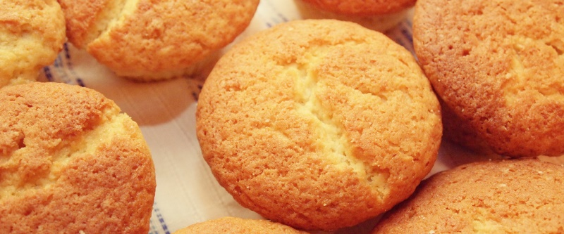

приготовление:
-
270 гр сливочного масла и 120 мл кефира выложить из холодильника и дождаться, пока они не станут комнатной температуры. Духовку поставить разогреваться на 175 градусов. Мягкое сливочное масло взбить в течение 3-х минут до пышности, добавить 550 гр сахара и продолжать взбивать до белого цвета и пышности. Не переставая взбивать, добавить 80 мл растительного масла, 60 мл рома или коньяка и ванилин. Уменьшить скорость миксера и по одному добавить 4 яйца + 2 желтка, тщательно перемешивая тесто в перерывах.
-
В отдельной миске просеить 350 гр муки, 1 ч.л. соли, 1 ч.л. разрыхлителя, а затем еще раз хорошо перемешать венчиком.
-
В сливочную массу добавить половину муки – вымать до однородности. Затем – половину от 120 мл кефира. Опять до однородности. Оставшуюся муку и оставшийся кефир. В уже готовое тесто добавить 120 мл взбитых 33% сливок и аккуратно, лопаточкой, перемешать их с тестом. Формочки смазать маслом, посыпать мукой, и вылить в них тесто.
-
Выпекать в духовке в течение 40 минут. Готовые кексы достать из духовки и прямо в форме поставить остывать минут на 10-15. После этого – аккуратно достать из форм и поставить охлаждаться.